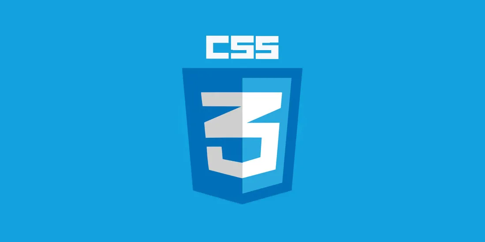

¡Hola! Bienvenido a mi portafolio virtual. Aquí podrás conocer mis habilidades, ver algunos de los proyectos en los que he trabajado y encontrar distintas formas de contacto. También comparto un poco sobre mí y mi proceso de aprendizaje.
Este espacio refleja mi dedicación y crecimiento, así que espero que disfrutes explorarlo y puedas dejar tu opinión para seguir mejorando.
Nace de una noche donde entendí que los conocimientos no se ejercen aprendiendo más, o realizando ejercicios básicos, el conocimiento nace cuando aplico lo que sé en un proyecto real, por eso, está página web contiene todo lo que he aprendido en cursos.
Curso donde he aprendido todo sobre páginas web.Tecnologías que usé aquí:
Este lenguaje de marcado se usó para darle la estructura a la web.

Esta tecnología se usó para darle el estilo y la estética a la página web.
Este lenguaje de programación fue utilizado para darle dinamismo a la web.